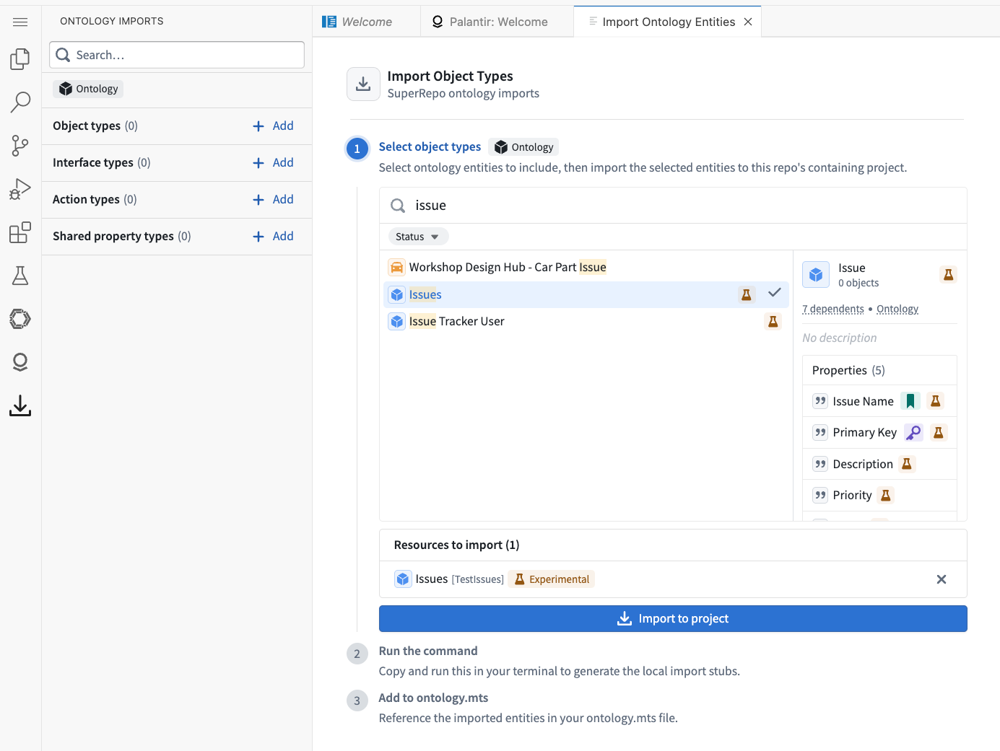
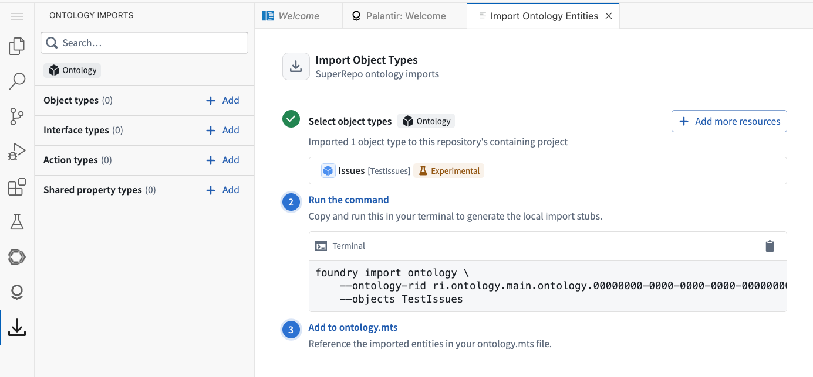
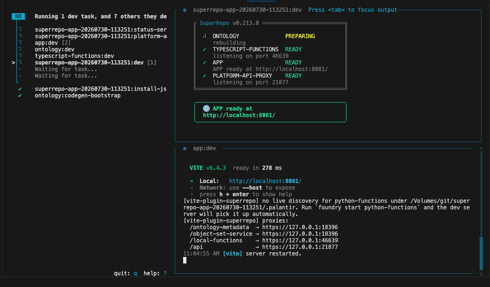
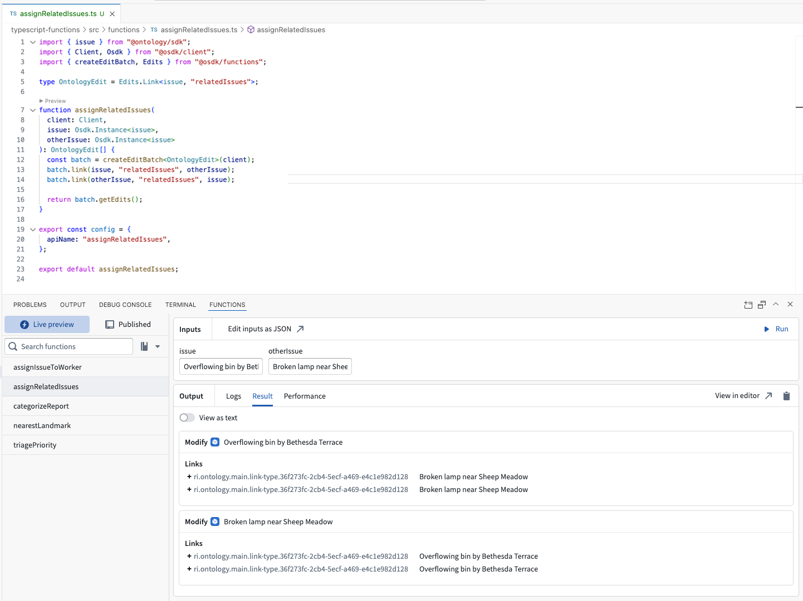

:::callout{theme="neutral" title="Beta"} SuperRepo is in the beta phase of development and may not be available on your enrollment. Functionality may change during active development. :::
SuperRepos provide the most value when leveraged for full-stack application building, because a SuperRepo enables editing, previewing, and deploying components in lock-step.
The following example walks through the process of importing an existing object type, defining a new link type, referring to it from a new function, and exposing that same function as a function-backed action. In other words, it shows how to ship a cross-cutting feature. This tutorial is set in the context of an issue management system; however, the same development workflow is applicable to a wide range of full-stack applications in every domain.
Start by looking at the structure of a SuperRepo repository. The root always contains a foundry.yml file which lays out the project's components. For example, among other settings, it might have the following:
components:
- type: ONTOLOGY
path: ./ontology
- type: TYPESCRIPT_FUNCTIONS
path: ./functions/typescript-functions
- type: APP
path: ./app
Components can be added, duplicated, or removed from this file to change the shape of your project. Advanced workflows provides further details on restructuring workflows.
In the following sections, you will change the Ontology layer by importing and then defining a type, the TypeScript functions layer by implementing a new function, and the application layer by exposing the result on the frontend.
The domain model of a full-stack application within the Palantir platform is defined in the Ontology. In a SuperRepo, existing Ontology types can be imported into the project either by running the foundry import ontology command or by using the Import sidebar of the Palantir extension for Visual Studio Code.
The wizard then guides you through selecting the type you wish to import.

Lastly, selecting the Import to project button imports the selected types into the Foundry Project and shows the foundry import ontology command that you need to run to codify the import within your repository.

The ontology.mts file is the home of Ontology-as-code, which lets you extend the Ontology using its TypeScript API â. For example, you can take the Issue object type imported above and use it to create a link type that defines a relation between issues.
export const relatedIssues = defineLink({
apiName: "relatedIssues",
many: {
object: Issue,
metadata: { apiName: "issue", displayName: "Issue" },
},
toMany: {
object: Issue,
metadata: { apiName: "relatedIssues", displayName: "Related issues" },
},
editsEnabled: true,
includeEmptyBackingDatasource: true,
});
Whenever the ontology.mts file changes, the local Ontology SDK package is regenerated. You can track the rebuild progress by navigating to the ontology:dev section of the foundry start (preview command) output in the terminal using the Tab and arrow keys.

SuperRepos currently support TypeScript v2 functions. You can define a function that creates instances of the relatedIssues link type defined in the Expand the Ontology section.
To do so, create a new file called assignRelatedIssues.ts in functions/typescript-functions/src/functions. The function it contains takes an Ontology SDK client and two issues as arguments and links the issues together.
import { Issue } from "@ontology/sdk";
import { Client, Osdk } from "@osdk/client";
import { createEditBatch, Edits } from "@osdk/functions";
type OntologyEdit = Edits.Link<Issue, "relatedIssues">;
function assignRelatedIssues(
client: Client,
issue: Osdk.Instance<Issue>,
otherIssue: Osdk.Instance<Issue>,
): OntologyEdit[] {
const batch = createEditBatch<OntologyEdit>(client);
batch.link(issue, "relatedIssues", otherIssue);
batch.link(otherIssue, "relatedIssues", issue);
return batch.getEdits();
}
export const config = {
apiName: "assignRelatedIssues",
};
export default assignRelatedIssues;
You can preview this function immediately using the functions support of the Palantir extension for Visual Studio Code.

This TypeScript v2 function returns Ontology edits; however, these edits need to be applied to the Ontology to take effect. Only actions are allowed to mutate the Ontology's content, which is why you need to expose assignRelatedIssues as a function-backed action before you can call it to create new links.
You can create a new function-backed action inside the same ontology.mts file you used to define the link type by calling the defineFunctionBackedAction function as follows:
export const assignRelatedIssuesAction = defineFunctionBackedAction({
functionApiName: "assignRelatedIssues",
apiName: "assign-related-issues-action",
});
This allows you to call the assignRelatedIssues action through the generated Ontology SDK from inside your React application.
The previous sections demonstrated importing an object type, creating a link type, and defining a TypeScript v2 function-backed action. The preview process of the Foundry CLI ensures that these are all exposed through the locally generated Ontology SDK library. You can consume this library from an Ontology SDK React application.
When using the @osdk/react library â, accessing these newly added items can be done in a few lines, as shown below.
import { Issue, assignRelatedIssuesAction } from "@ontology/sdk";
import {
useOsdkAction,
useOsdkObjects,
} from "@osdk/react";
const { data: allIssues } = useOsdkObjects(Issue, { pageSize: 200 });
const relate = useOsdkAction(assignRelatedIssuesAction);
You updated the Ontology, authored a function, turned it into a function-backed action, exposed these additions through the Ontology SDK, and integrated them with the frontend, all without leaving the repository or your IDE.
Before SuperRepos, implementing this feature would have required jumping between four applications, waiting for CI checks, and republishing the Ontology SDK multiple times. SuperRepos are designed to eliminate that overhead.